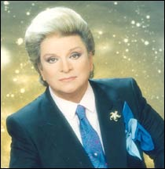

Barış Manço
Barış Manço, Türk rock müziğinin öncülerindendir. Yaratıcı sözleri ve özgün tarzıyla milyonların sevgisini kazanmıştır.
Önemli Eserleri:
- Dönence
- Gül Pembe
- Halil İbrahim Sofrası

Zeki Müren
Türk sanat müziğinin efsanevi ismi Zeki Müren, güçlü sesi ve sahne performansıyla halkın kalbinde taht kurmuştur.
Önemli Eserleri:
- Şimdi Uzaklardasın
- Elbet Bir Gün Buluşacağız

Ferdi Tayfur
Arabesk müziğin efsane ismi Ferdi Tayfur, duygusal şarkıları ve etkileyici sesiyle milyonların kalbinde taht kurmuştur.
Önemli Eserleri:
- Çeşme
- Derbeder
- Huzurum Kalmadı

Sezen Aksu
Pop müziğinin “Minik Serçe”si Sezen Aksu, duygusal ve anlamlı şarkılarıyla Türk müziğine yön vermiştir.
Önemli Eserleri:
- Gülümse
- Şanıma İnanma

İbrahim Erkal
Arabesk ve pop müziğinin güçlü sesi İbrahim Erkal, duygusal eserleriyle dinleyicileri etkilemiştir.
Önemli Eserleri:
- Canısı
- Gülom

Barış Akarsu
Barış Akarsu, Türkiye'nin sevilen rock müzisyenlerinden biridir. Kısa yaşamına rağmen büyük etki bırakmış, güçlü yorumuyla geniş kitlelere ulaşmıştır.
Önemli Eserleri:
- Islak Islak
- Düşmeden Bulutlarda Koşmam Gerek
- Ayrılık Zamansız Gelir

Orhan Gencebay
Orhan Gencebay, Türk müziğinde arabesk ve fantezi müziğin önemli isimlerindendir. Kendine has üslubu ve eserleriyle müzik dünyasında derin izler bırakmıştır.
Önemli Eserleri:
- Batsın Bu Dünya
- Hatasız Kul Olmaz
- Dönme Dolap

Selda Bağcan
Selda Bağcan, Türk halk müziği ve protest müziğin güçlü seslerinden biridir. Duygusal yorumları ve özgün tarzıyla geniş kitlelere ulaşmıştır.
Önemli Eserleri:
- Yuh Yuh
- İnce İnce Bir Kar Yağar
- Dağlar Dağlar